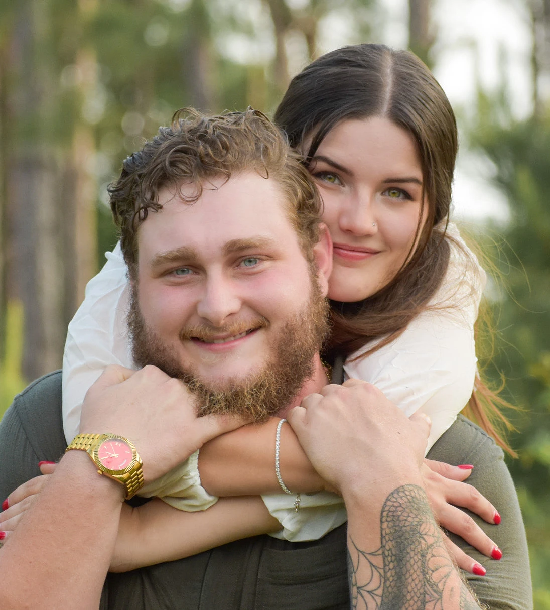
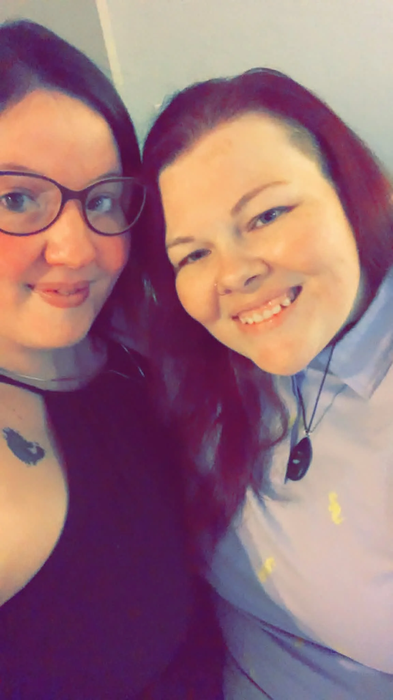

From the Couple
Our wedding day is going to look a little different than a traditional wedding. Honestly, we wouldn't want it any other way.
On our special day, we'll be celebrating two love stories and two new beginnings. We will have our ceremony first, followed by my mom Emily Jenkins, and her fiancé Stephanie McWilliams, having their ceremony. Afterward, we'll all come together for one big reception with the people we love most.


We know some of you may be wondering why we decided to celebrate this way, but it just felt right for us. There's something really special about getting to share such an important day with my mom and Stephanie and having our families all together to celebrate both of us.
This isn't about combining two weddings into one, but about celebrating two couples who are starting new chapters and getting to do it surrounded by the same people who mean so much to us.
There will be two ceremonies, two couples, and two love stories—but one room filled with love, family, laughter, and the people who helped us get here.
We can't wait to celebrate this very special day with all of you.
— Micah & Makayla